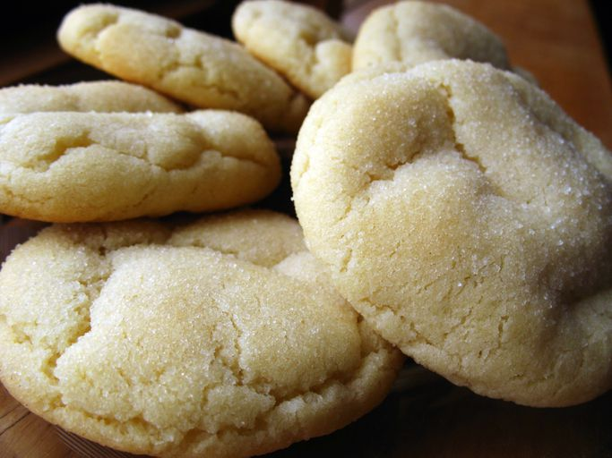

Home
Easy Sugar Cookies

This sugar cookie recipe is quick and easy to make with simple ingredients. They are delicious as-is or with candies mixed in. My friend uses chocolate mints on top, and they taste great!
Satisfy your sweet tooth with this top-rated sugar cookie recipe. It comes together with just a few ingredients you likely already have on hand — and the sugar cookies turn out perfect every time.
Ingredients
- 2 ¾ cups all-purpose flour
- 1 teaspoon baking soda
- ½ teaspoon baking powder
- 1 cup butter, softened
- 1 ½ cups white sugar
- 1 egg
- 1 teaspoon vanilla extract
Steps
- Gather all ingredients. Preheat the oven to 375° F (190° C)
- Stir flour, baking soda, and baking powder together in a small bowl.
- Beat Sugar and butter in a large bowl with an electric mixer until smooth.
- Beat in egg and vanilla.
- Gradually blend in flour mixture.
- Roll dough into walnut-sized balls and place 2 inches apart onto ungreased baking sheets
- Bake in the preheated oven until edges are golden, 8 to 10 minutes. Cool on the baking sheets briefly before removing to a wire rack to cool completely.